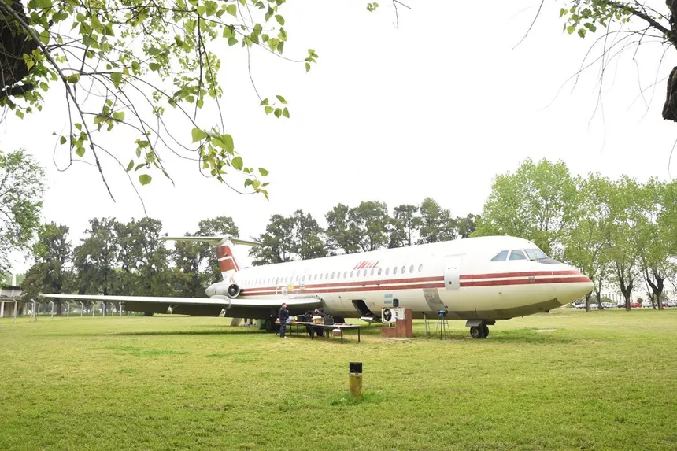
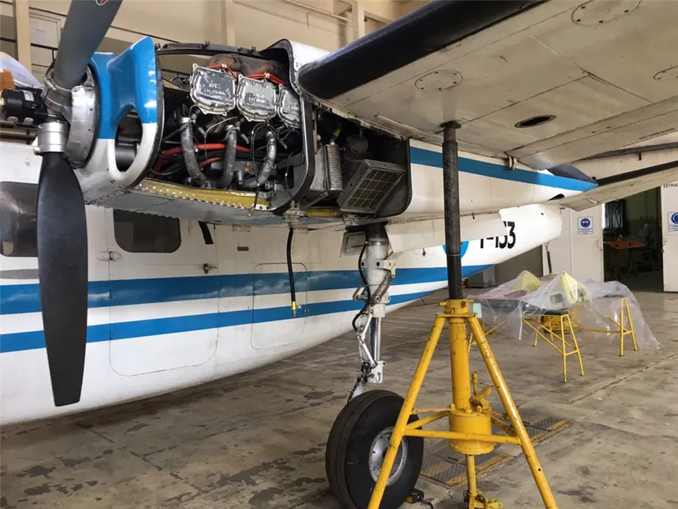

- Competencias: En este instituto de educación secundaria he obtenido el título de Técnico
Aeronáutico, adquiriendo conocimientos sobre aerodinámica, mantenimiento de aeronaves y
procedimientos de reparaciones.
- Fecha ingreso: Año 1988.
- Fecha egreso: Año 1994.
Volver

